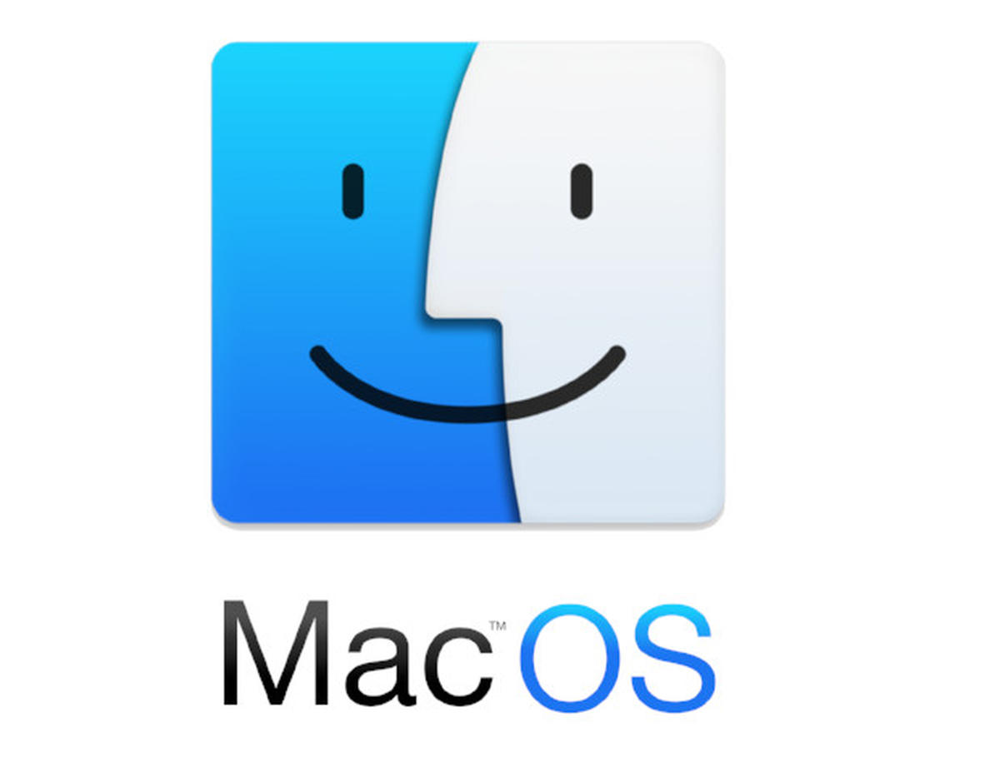
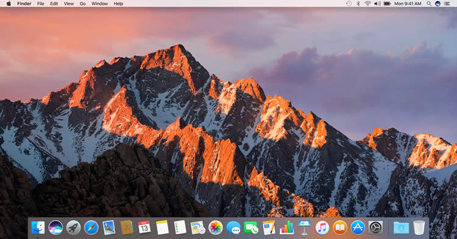

macOS
Mac OS, operating system (OS) developed by way of the American computer organization Apple Inc. The OS become
brought in 1984 to run the corporation's Macintosh line of private computers (PCs). The Macintosh heralded the era of
graphical person interface (GUI) systems, and it inspired Microsoft Corporation to expand its very
own GUI, the Windows OS.
Apple's advertising and marketing for the advent of the Macintosh centered closely on its working gadget’s intuitive
ease of use. Unlike honestly all other cutting-edge PCs, the Mac OS (to start with designated sincerelySystem Software,
with a model quantity appended) became graphically based. Rather than typing instructions andlisting paths at text
prompts,users moved a mouse pointer to visually navigate the Finder—a sequence of digitalfolders and files, represented
with the aid of icons.Most computer working systems subsequently adopted the GUImodel. In the Nineteen Eighties Apple
made an settlement permitting Microsoft to use certain factors of the Mac interface in early variations of Windows.
However,besides for a short period inside the 1990s, Mac OS has in no way been certified to be used with computer systems
made by means of manufacturers aside from Apple.

Later Mac OS releases brought features consisting of Internet record sharing, community browsing, and multiple
consumer accounts. In 1996 Apple received rival NeXT Computers, which become founded by way of Steven Jobs after
his departure from Apple, and in 2001 the enterprise rolled out Mac OS X, a main redesign based on both the
NextStep gadget and Apple’s most latest OS release. OS X ran on a UNIX kernel (core software code) and presented
technical advances consisting of memory safety and preemptive multitasking, along with a greater versatile Finder,
an elegant-looking interface referred to as Aqua, and a convenient graphical “Dock” bar for launching often used
applications. Updates to OS X added features which includes automated backups and a “Dashboard” manager for small,
available applications called widgets.
since 2007 Apple unveiled a number of cellular gadgets that would get right of entry to the Internet,
which include the iPhone telephone and the iPad tablet pc. Apple soon emphasised the ability of OS X to
connect with these devices. In 2011 Apple brought iCloud, a cloud computing provider that allowed customers
to share statistics among all of their Apple devices, for both OS X and the cell operating system iOS. Apple
brought more features permitting connectivity between gadgets to successive updates of OS X, iOS, and later
watchOS (the running device for the Apple Watch smartwatch). These capabilities blanketed the capacity to
obtain smartphone calls (made to the iPhone) and the method of quickly sharing records (such as photographs
and text) amongst gadgets.